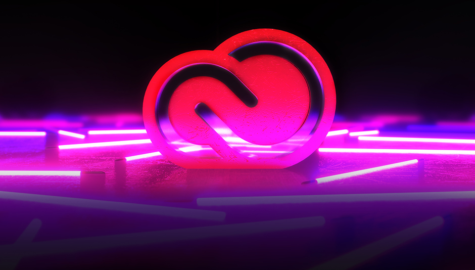

The Ultimate Web Design
Workspace for Photoshop
I’ve been using Adobe Photoshop on a near daily basis, since 2006 and over
this time I’ve learned quite a number of tips & tricks. I’ve optimized Photoshop for performance
, learned all the essential shortcut keys and tools, and have
recently found out what I consider the ‘ultimate web design workspace’.
THE ULTIMATE WEB DESIGN WORKSPACE
In this post, I outline how I have personally set up my web design workspace
and why I have found it to be the most productive layout for producing web
work since I’ve started using Photoshop. Take note that I am using a 27″
monitor at 2560×1440 resolution though this layout should work on monitors
17″ and up.
You can download the workspace here. Detailed instructions for installation
can be found in the link above or in short, below. Note that this file was made
in CS4 but it seems to work in newer and older versions, even though it gives
a message saying otherwise.
DOCUMENT SET-UPE
This is where the magic happens, the blank canvas. I usually start with
the 960 GS and set the width at 1400 pixels. The main Photoshop tools are
still on the left (by default) with the canvas in the middle and the other
windows on the right of the screen.

LAYER COMPS
If you’re not usingLayer Compsalready and you’re working as a designer,
you’re mind is about to be blown. This isn’t the place to give a tutorial on them
but having them in your workflow is pretty much essential, as it saves hours of
time. Layer Comps are also very handy for putting together
a presentations via the ‘Export Layer Comps’ script.
